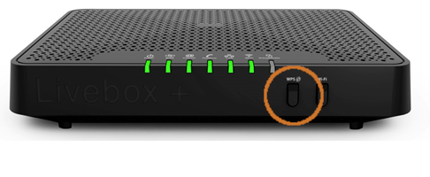
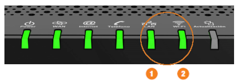

Se ha producido un error en la última actualización y se requiere una nueva sincronización.
Instrucciones:
- Presione durante 2 segundos el botón WPS de su dispositivo.

- Las luces 1 y 2 parpadearán durante la sincronización.

Una vez dejen de parpadear, pasados 3 minutos, volverá a estar operativo. Si no fuera así, repita el proceso solo una vez. Si después advierte problemas de conexión, por favor contacte con su proveedor.